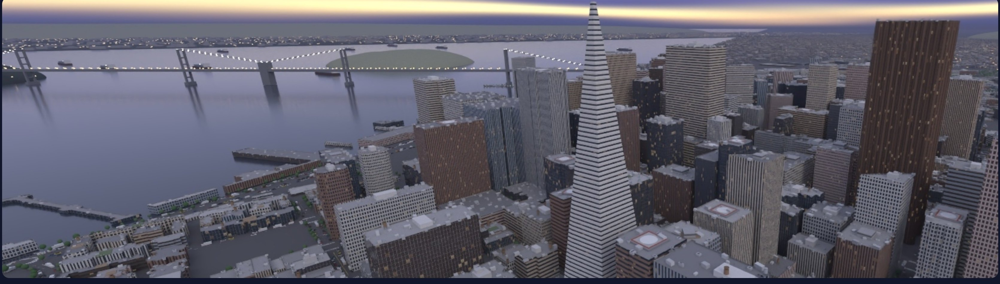
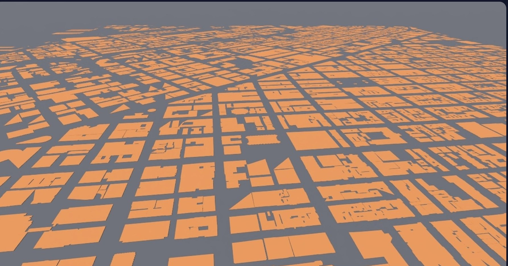
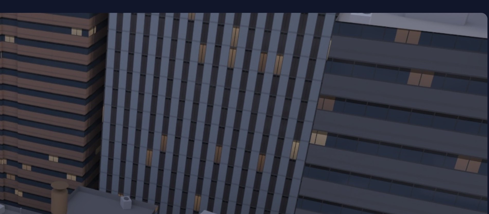
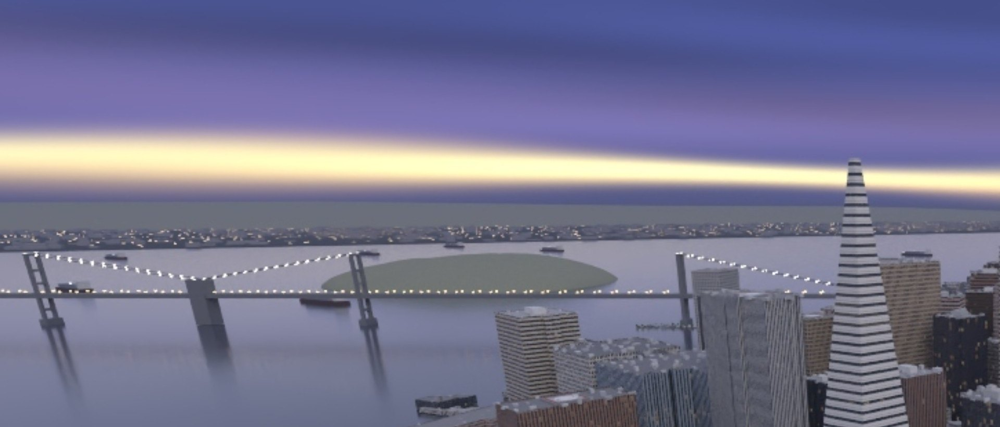
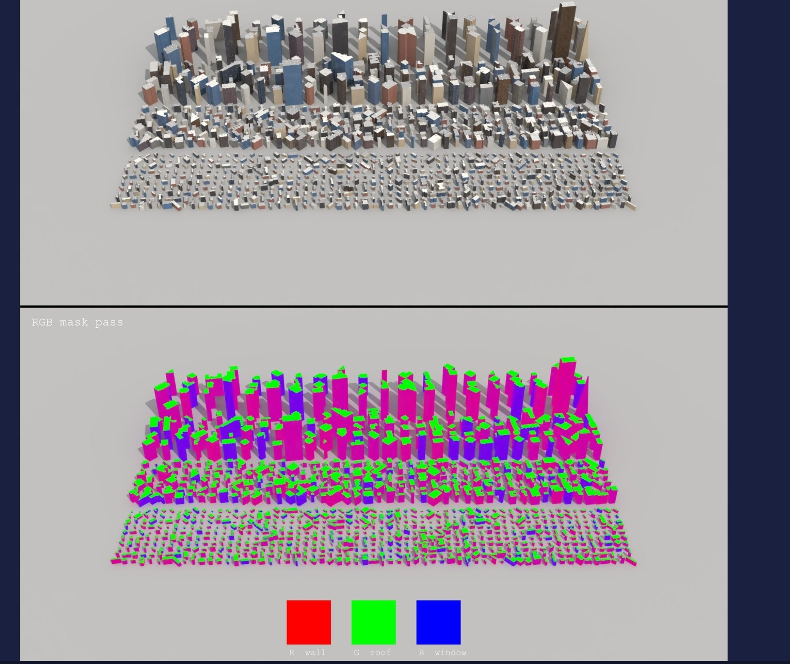

Downtown San Francisco built from public map data, lit for blue hour, plus a lineup of 1,050 buildings.
Houdini 20.5 · Karma XPU · Nodes only

Footprints with LiDAR heights, street centrelines
Extrude, spires, setbacks, crowns, parapets
One MaterialX shader, four facade types
Roofs, streets, bay and background
Painted dusk sky, cool ambient, dim windows
Aerial camera matched to the reference photo, 1920×816
Every building variant on a grid, beauty plus RGB mask
DataSF building footprints. Every polygon carries its own LiDAR heights (median, max).
A small Python SOP reads the GeoJSON and projects longitude/latitude to metres around the Transamerica Pyramid. One Transform SOP turns the Z-up map into Houdini’s Y-up world. Streets get the same transform.

9,621 buildings after clean-up
Masonry wall, separate openings
Horizontal bands of glass
Vertical stone fins
Almost all glass
Per-building attributes (floor height, bay width, window margins, glass tint) drive a MaterialX window grid.
Windows sit in the wall: dark frame, centre mullion, lintel shadow, floor-slab line. Lit rooms are rare and dim: about 1 in 5 cells, faint amber, fading towards the sill.


Towers, sagging cables, deck and the cable lights
Yerba Buena and Treasure Island, with lights
3,200 low blocks and 5,200 lights on the far shore
Blocks with the window shader and a street-light grid
The reference is lit by the sky, with only a few dim windows. The first versions glowed like a night scene; the fix was mostly turning things down.
| Light | What it does | Level |
|---|---|---|
| Painted dusk sky | Generated .hdr: cloud deck, magenta band, gold gap | 1.5 |
| Ambient dome | Plain cool fill, hidden from the camera | 0.42 |
| Warm key | Weak low light to model the towers | 0.65 |
| Windows | About 1 in 5 cells, faint amber | 0.2 |
| Street lights | Lamp heads, car lamps, signal lenses | 2.5 |
| Haze | Karma fog box for depth | thin |
Karma XPU · 1920×816 · 96 samples · about 15 minutes a frame
1,050 of the 9,621 buildings, tallest at the back, in four bands: 60 towers, 116 high-rise, 264 mid-rise, 610 low-rise.
Five looks dealt in turn: warm office, dark glass, stepped masonry, red brick, blue glass. RGB mask pass: red wall, green roof, blue window.

5 looks → exports to SF_LINEUP controls
One .bgeo.sc per look
Beauty and RGB mask
ROP Fetch of the Karma ROP
hoiiotool: labels, swatches, stack
Renders start only after all five caches exist; the sheet waits for both passes.
cook_lineup.py runs the whole chain in hython, about 14 minutes on one GPU.
The first wedge row (4 buildings × 3 looks) still sits beside it.
| File | Role |
|---|---|
| sf_footPrint_08.hip | The finished scene (Houdini 20.5) |
| build_v07.py | Loads v06, adds bay, camera, lights; saves v08 |
| build_v07_facade.py | Facade types, palette, window shader |
| build_v07_street.py | Lamp posts, vehicles, trees, bins, small lights |
| build_v07_background.py | East Bay, ships, distant-city lights |
| build_v07_lineup.py | Lineup SOPs, Solaris branch, TOP row |
| cook_lineup.py | Cooks the TOP row headless |
| make_ref_dusk_hdr.py | Writes the painted dusk sky .hdr |
Rule throughout: no VEX wrangles. SOP nodes with hscript expressions; Python only to read GeoJSON, find intersections and assemble the sheet.